Tutorial problems
The following exercises should be attempted before or during your next tutorial session.
Problem 1
For each of the following graphs, find a minimal spanning tree using (i) Kruskal's algorithm, and (ii) the Prim-Jarník algorithm. Draw the tree, and give its weight.
- (a) Graph 1
- (b) Graph 2
- (c) Graph 3
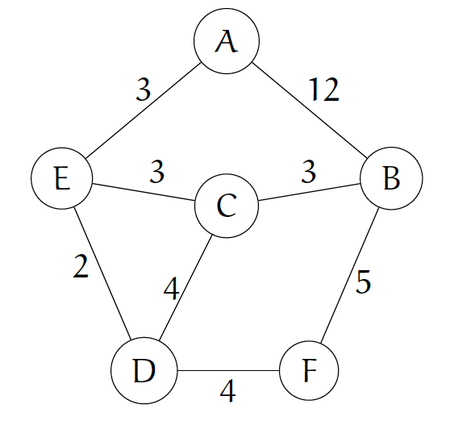
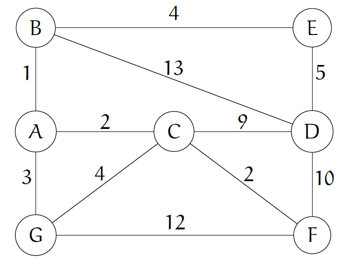
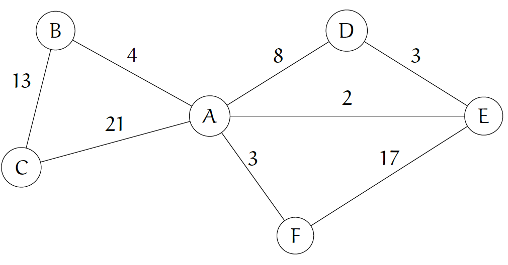
View Solution
Solution & Explanation
(a)
Kruskal's Algorithm:
We sort the edges:
| Edge | (E,D) | (E,C) | (B,C) | (A,E) | (D,C) | (D,F) | (B,F) | (A,B) |
|---|---|---|---|---|---|---|---|---|
| Weight | 2 | 3 | 3 | 3 | 4 | 4 | 5 | 12 |
We add the edges in this order, skipping edges that create a cycle:
- Add (E,D)
- Add (E,C)
- Add (B,C)
- Add (A,E)
- Skip (D,C) (creates cycle)
- Add (D,F)
- All vertices visited; stop
Prim-Jarník Algorithm:
We start with vertex A:
- Visit A
- Min. edge is (A,E). Add (A,E), visit E
- Min. edge is (E,D). Add (E,D), visit D
- Min. edge is (E,C). Add (E,C), visit C
- Min. edge is (B,C). Add (B,C), visit B
- Min. edge is (D,F). Add (D,F), visit F
- All vertices visited; stop
In both cases, the weight of the tree is 2+3+3+3+4 = 15.
(b)
Kruskal's Algorithm:
We sort the edges:
| Edge | (A,B) | (A,C) | (C,F) | (A,G) | (B,E) | (C,G) | (D,E) | (C,D) | (D,F) | (F,G) | (B,D) |
|---|---|---|---|---|---|---|---|---|---|---|---|
| Weight | 1 | 2 | 2 | 3 | 4 | 4 | 5 | 9 | 10 | 12 | 13 |
We add the edges in this order, skipping edges that create a cycle:
- Add (A,B)
- Add (A,C)
- Add (C,F)
- Add (A,G)
- Add (B,E)
- Skip (C,G) (creates cycle)
- Add (D,E)
- All vertices visited; stop
Prim-Jarník Algorithm:
We start with vertex A:
- Visit A
- Min. edge is (A,B). Add (A,B), visit B
- Min. edge is (A,C). Add (A,C), visit C
- Min. edge is (C,F). Add (C,F), visit F
- Min. edge is (A,G). Add (A,G), visit G
- Min. edge is (B,E). Add (B,E), visit E
- Min. edge is (D,E). Add (D,E), visit D
- All vertices visited; stop
In both cases, the tree weight is 1+2+2+3+4+5 = 17.
(c)
Kruskal's Algorithm:
We sort the edges:
| Edge | (A,E) | (D,E) | (A,F) | (A,B) | (A,D) | (B,C) | (E,F) | (A,C) |
|---|---|---|---|---|---|---|---|---|
| Weight | 2 | 3 | 3 | 4 | 8 | 13 | 17 | 21 |
We add the edges in this order, skipping edges that create a cycle:
- Add (A,E)
- Add (D,E)
- Add (A,F)
- Add (A,B)
- Skip (A,D) (creates cycle)
- Add (B,C)
- All vertices visited; stop
Prim-Jarník Algorithm:
We start with vertex A:
- Visit A
- Min. edge is (A,E). Add (A,E), visit E
- Min. edge is (A,F). Add (A,F), visit F
- Min. edge is (D,E). Add (D,E), visit D
- Min. edge is (A,B). Add (A,B), visit B
- Min. edge is (B,C). Add (B,C), visit C
In both cases, the tree weight is 2 + 3 + 3 + 4 + 13 = 25.
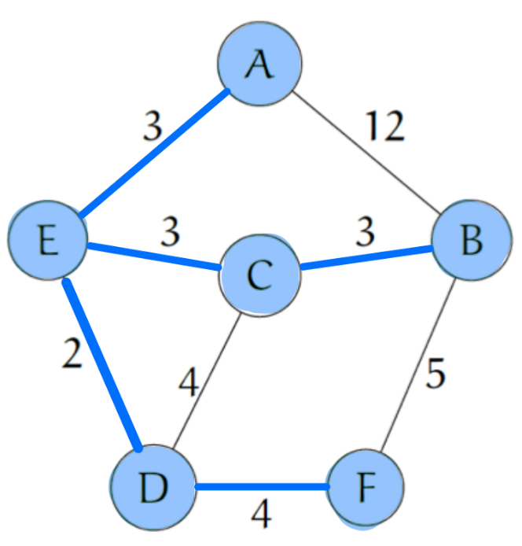
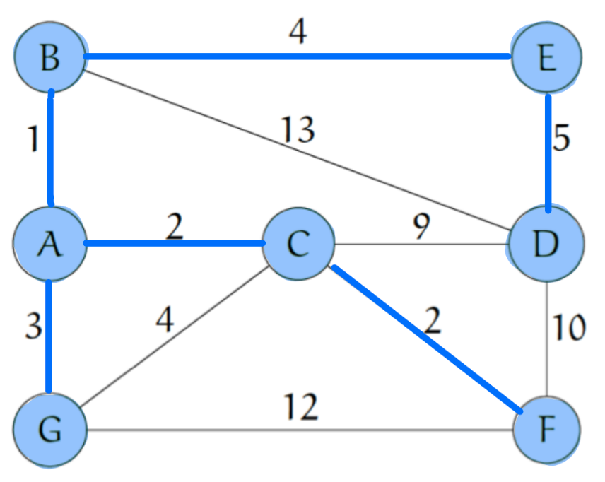
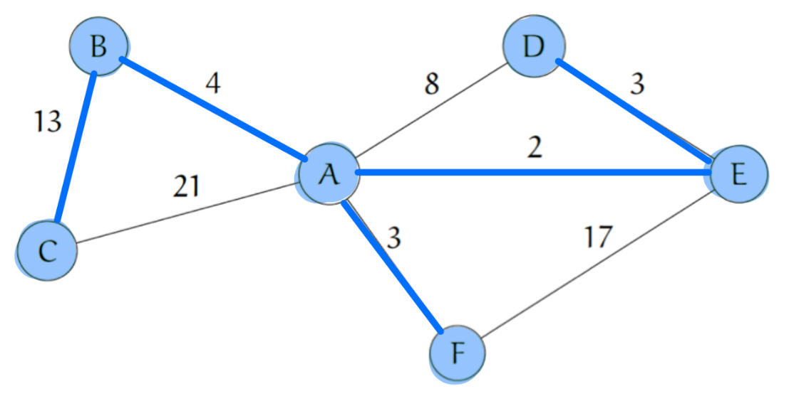
Problem 2
Use Dijkstra's algorithm to find the shortest paths from Node A to Node E in the following networks and give their length.
- (a) Network 1
- (b) Network 2
- (c) Network 3
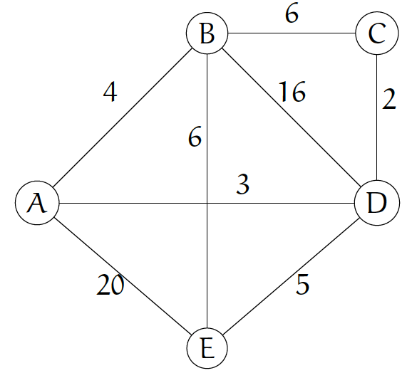
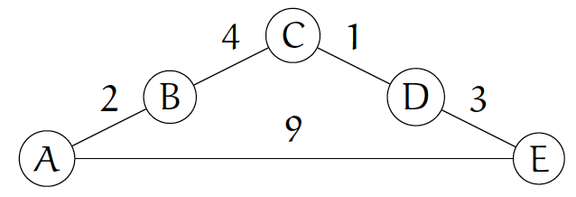
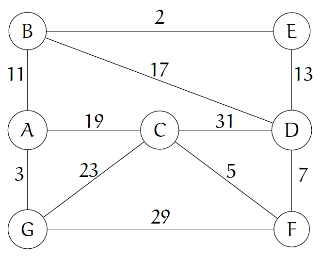
View Solution
Solution & Explanation
(a)
Label all vertices with L(u) = \infty and L(A) = 0. At each step, visit the unvisited node with the minimal L value, and update L values of the adjacent nodes.
- Visit A, L(A) = 0. Update B,D,E:
- d(A,B) = 4, L(B) = \min\{\infty, 4\} =4
- d(A,D) = 3, L(D) = \min\{\infty, 3\} = 3
- d(A,E) = 20, L(E) = \min\{\infty, 20\} = 20
- Visit D, L(D) = 3. Update B, E, C:
- d(B,D) = 16, L(B) = \min\{4, 16 + 3\} = 4. Do not update
- d(D,C) = 2, L(C) = \min\{\infty, 2+3\} = 5
- d(D,E) = 5, L(E) = \min\{20, 5+3\} = 8
- Visit B, L(B) = 4. Update E, C:
- d(B,E) = 6, L(E) = \min\{8, 6+4\} = 8. Do not update
- d(B,C) = 6, L(C) = \min\{5, 6+4\} = 5. Do not update
- Visit C. No unvisited adjacent vertices
- Visit E. Stop
The minimum-distance path has length 8. The path is A \rightarrow D \rightarrow E.
(b)
Label all vertices with L(u) = \infty and L(A) = 0. At each step, visit the unvisited node with the minimal L value, and update L values of the adjacent nodes.
- Visit A, L(A) = 0. Update B, E:
- d(A,B) = 2, L(B) = \min\{\infty, 2\} = 2
- d(A,E) = 9, L(E) = \min\{\infty, 9\} = 9
- Visit B, L(B) = 2. Update C:
- d(B,C) = 4, L(C) = \min\{\infty, 4+2\} = 6
- Visit C, L(C) = 6. Update D:
- d(C,D) = 1, L(D) = \min\{\infty, 1+6\} = 7
- Visit D, L(D) = 7. Update E:
- d(D,E) = 3, L(E) = \min\{9, 3+7\} = 9. Do not update
- Visit E. Stop
The minimum-distance path has length 9. The path is A \rightarrow E.
(c)
Label all vertices with L(u) = \infty and L(A) = 0. At each step, visit the unvisited node with the minimal L value, and update L values of the adjacent nodes.
- Visit A, L(A) = 0. Update B, C, G:
- d(A,B) = 11, L(B) = \min\{\infty, 11\} = 11
- d(A,C) = 19, L(C) = \min\{\infty, 19\}=19
- d(A,G) = 3, L(G) =\min\{\infty, 3\} = 3
- Visit G, L(G) = 3. Update C, F:
- d(C,G) = 23, L(C) = \min\{19, 23+3\} = 19. Do not update
- d(F,G) = 29, L(F) = \min\{\infty, 29\} = 29
- Visit B, L(B) = 11. Update E, D:
- d(B,E) = 2, L(E) = \min\{\infty, 2+11\} = 13
- d(B,D) = 17, L(D) = \min\{\infty, 17+11\} = 28
- Visit E. Stop
The minimum-distance path has length 13. The path is A \rightarrow B \rightarrow E.
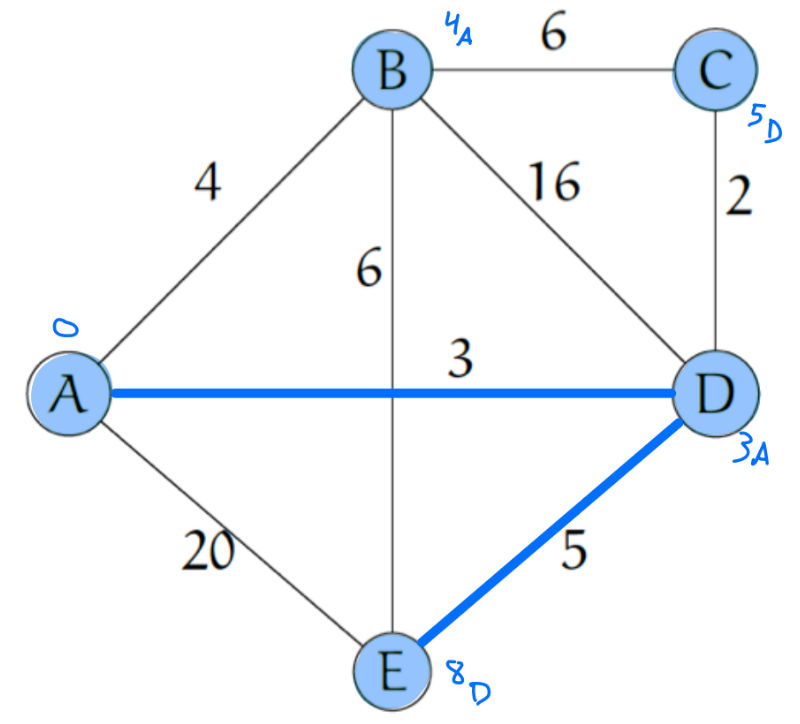
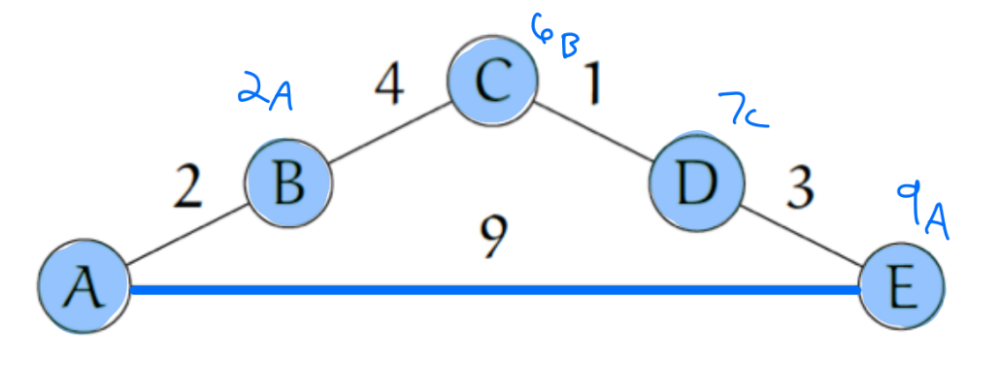
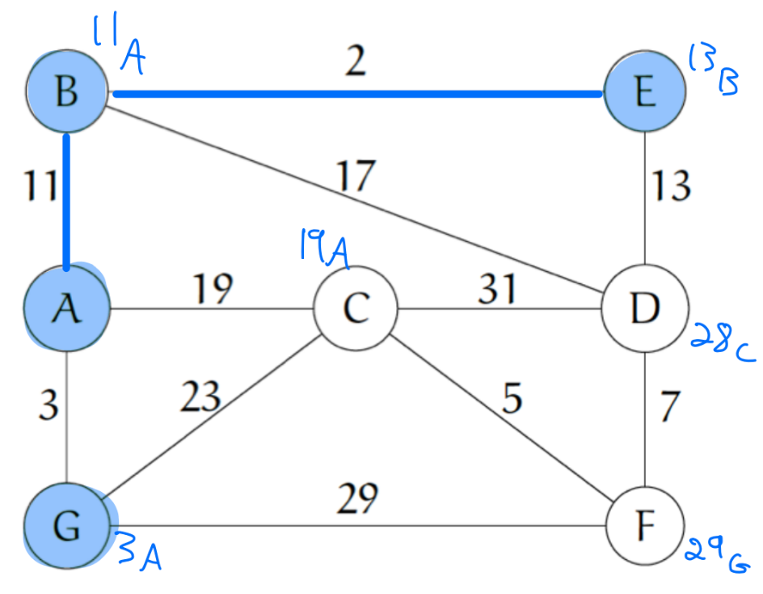
Problem 3
List the order in which the vertices in the trees below are processed using preorder, inorder, and postorder traversal.
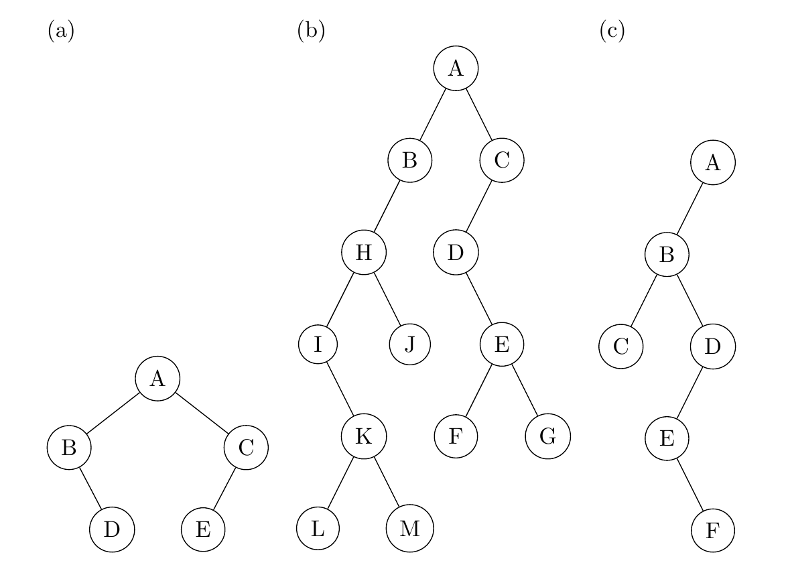
View Solution
Solution & Explanation
(a)
- Preorder: A, B, D, C, E
- Inorder: B, D, A, E, C
- Postorder: D, B, E, C, A
(b)
- Preorder: A, B, H, I, K, L, M, J, C, D, E, F, G
- Inorder: I, L, K, M, H, J, B, A, D, F, E, G, C
- Postorder: L, M, K, I, J, H, B, F, G, E, D, C, A
(c)
- Preorder: A, B, C, D, E, F
- Inorder: C, B, F, E, D, A
- Postorder: C, F, E, D, B, A
Additional problems
The following problems refer to the following graph.
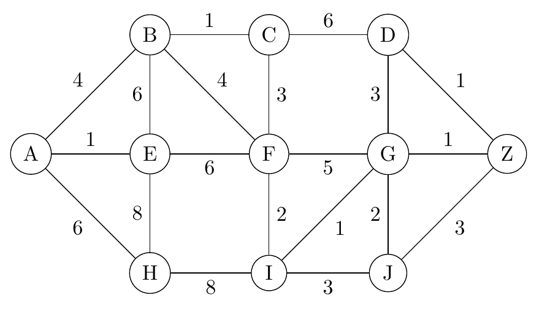
Problem 4
Use (a) the Prim-Jarník algorithm and (b) Kruskal's algorithm to construct minimum spanning trees for this graph. Compute the weights of each tree and verify that they are the same.
View Solution
Solution & Explanation
Prim-Jarník Algorithm:
- Start with vertex A: L(A) = 0
- Visit A, add edge (A,B) with weight 4, visit B
- Min edge is (B,C) with weight 2, add (B,C), visit C
- Min edge is (C,F) with weight 1, add (C,F), visit F
- Min edge is (F,E) with weight 3, add (F,E), visit E
- Min edge is (E,D) with weight 5, add (E,D), visit D
- Min edge is (D,G) with weight 6, add (D,G), visit G
- Min edge is (G,H) with weight 4, add (G,H), visit H
- Min edge is (H,I) with weight 3, add (H,I), visit I
- All vertices visited; stop
Kruskal's Algorithm:
Sorted edges by weight:
| Edge | (C,F) | (B,C) | (H,I) | (F,E) | (A,B) | (G,H) | (E,D) | (D,G) | (A,D) | (B,E) | (C,D) |
|---|---|---|---|---|---|---|---|---|---|---|---|
| Weight | 1 | 2 | 3 | 3 | 4 | 4 | 5 | 6 | 7 | 8 | 9 |
Add edges in order, skipping cycles:
- Add (C,F)
- Add (B,C)
- Add (H,I)
- Add (F,E)
- Add (A,B)
- Add (G,H)
- Add (E,D)
- Add (D,G)
- Skip (A,D) - creates cycle
- Skip (B,E) - creates cycle
- Skip (C,D) - creates cycle
Total weight calculation:
1 + 2 + 3 + 3 + 4 + 4 + 5 + 6 = 28
Both algorithms produce the same minimum spanning tree with weight 28.
Problem 5
Use Dijkstra's algorithm to find:
- (a) A shortest path from A to I, and the length of this path
- (b) A shortest path from A to Z, and the length of this path
- (c) A shortest path from A to Z that passes through C, and the length of this path
View Solution
Solution & Explanation
Dijkstra's Algorithm from A:
Initial: L(A) = 0, all others ∞
- Visit A: Update B(4), D(7)
- Visit B (L=4): Update C(4+2=6), E(4+8=12)
- Visit C (L=6): Update F(6+1=7)
- Visit F (L=7): Update E(7+3=10), I(7+9=16)
- Visit D (L=7): Update G(7+6=13)
- Visit E (L=10): Update H(10+7=17), I(10+5=15)
- Visit G (L=13): Update H(13+4=17), Z(13+11=24)
- Visit H (L=17): Update I(17+3=20), Z(17+8=25)
- Visit I (L=15): Update Z(15+6=21)
(a) Shortest path A to I:
A → B → C → F → E → I
Length: 15
(b) Shortest path A to Z:
A → B → C → F → E → I → Z
Length: 21
(c) Shortest path A to Z through C:
- A to C: A → B → C (length 6)
- C to Z: C → F → E → I → Z (length 1+3+5+6=15)
Total: 6 + 15 = 21
Problem 6
List the order of the vertices that would be processed in this graph during:
- (a) A breadth-first search starting at A
- (b) A breadth-first search starting at F
- (c) A depth-first search starting at A
- (d) A depth-first search starting at F
View Solution
Solution & Explanation
(a) BFS starting at A:
A, B, D, C, E, G, F, H, I, Z
(Level order: A; B,D; C,E,G; F,H; I; Z)
(b) BFS starting at F:
F, C, E, I, B, D, H, Z, A, G
(Level order: F; C,E,I; B,D,H,Z; A,G)
(c) DFS starting at A:
A, B, C, F, E, H, G, D, I, Z
(Assuming alphabetical order for neighbors)
(d) DFS starting at F:
F, C, B, A, D, G, H, E, I, Z
(Assuming alphabetical order for neighbors)
Note: These traversal orders assume we visit neighbors in alphabetical order when multiple choices are available. The actual order may vary slightly depending on the specific implementation, but the general pattern follows the BFS (level-by-level) and DFS (depth-first) principles.